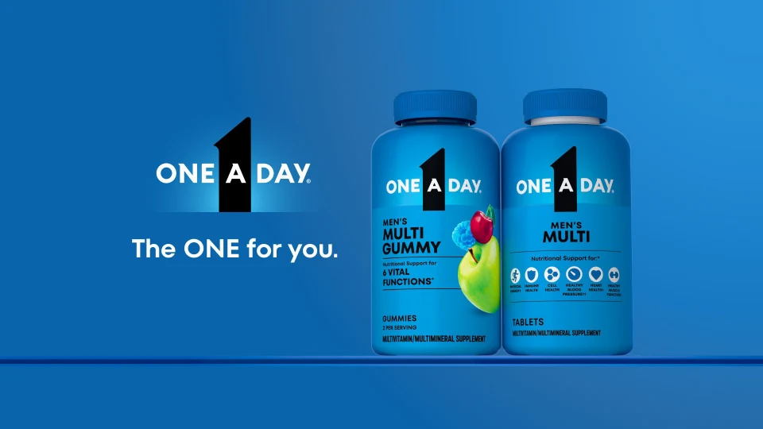
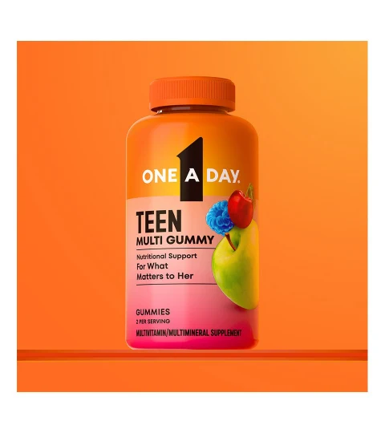
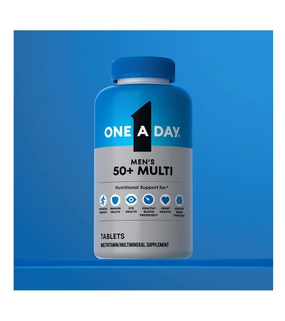
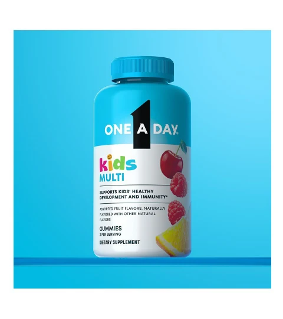
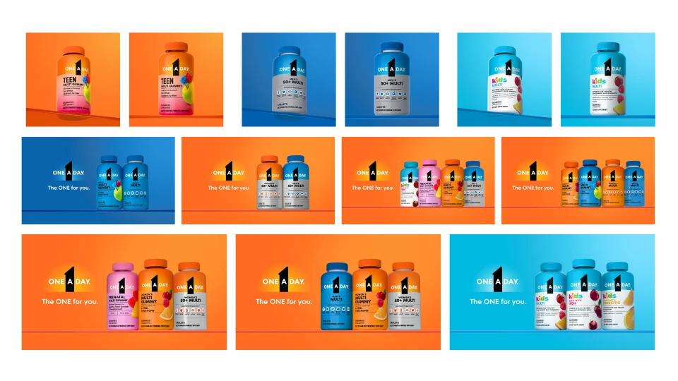
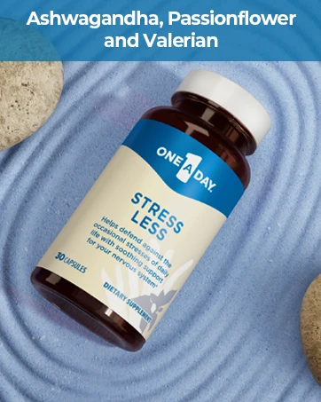
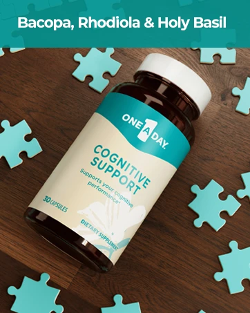
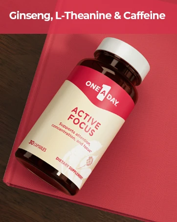
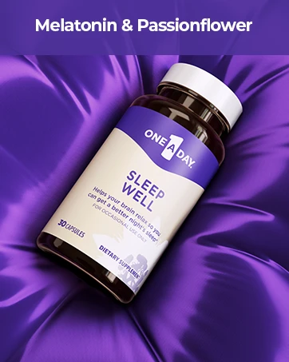
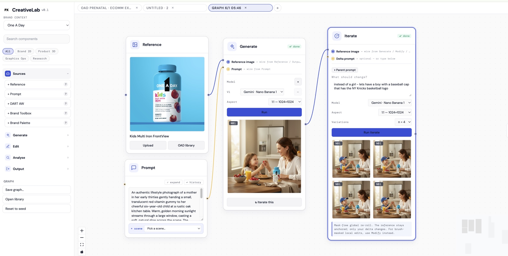

For the last seven years I've been a brand designer, building brands across healthcare. But the making started at the easel and never stopped — drawing, painting, sculpture, digital art, 3D, motion, and lately AI. I build tools, wire pipelines, and make in my free time whenever I can — I love to learn and experiment. What follows is a tour across those disciplines.
MiraLAX line launch — one idea across every surface. Brand identity, packaging, pouch-format innovation, ecommerce, and social, concepted to creative-lock in three-week sprints. 3rd fastest-scaling Digestive Health launch in five years — $48M combined retail sales.
I make across every medium I can get my hands on — and let each new tool reshape how I make.
01
Brand & campaign
Integrated · brief to launch · at scale
The work
I lead creative from the blank brief to launch — concepting the idea, art-directing the look, and driving it through to finished, channel-ready execution. Recent work includes the new One A Day brand identity (hundreds of KVs and photoreal renders) and MiraLAX line extensions — one idea carried across pack, film, social, retail, and web.
How I work
Side by side with marketers, insights, animators, ecomm, copywriters, and producers — I hold the through-line so one idea stays whole as it fans out across channels, markets, and a hundred deliverables.
One A Day — new brand identity. Women’s Multi Gummy launch animation — part of the “The ONE for you.” system I led across the full portfolio. Hundreds of photoreal stills and motion assets for digital, print, and retail.Portfolio lineup. Key visual system across Women’s, Men’s, Kids, Prenatal, and 50+ lines — one identity, every segment.
Wave 1 + 2 — key visuals by segment

Men’s. Gummy and tablet renders on the new blue brand field.Kids. Multi, Iron, and Probiotic gummies — three SKUs, one system.
Gummy + tablet. The full format range on one orange brand field.
Photoreal product renders — digital & print

Teen Multi Gummy

Men’s 50+ Multi

Kids Multi
Kids — character animation. Character motion for the new Kids line — same cyan brand field, same “The ONE for you.” system, built for digital and social.
Hundreds of renders produced for Amazon, retailer platforms, brand .com, social, and print — each SKU, format, and segment with its own color story inside one identity system.

Wave 1 + 2 stills. A slice of the full KV matrix — every segment, every format, every brand field.
02
Ecommerce & the digital shelf
Amazon & retailer · web · mobile · in-store
The work
Where the brand actually meets the shopper — the digital shelf and the store aisle. I design the full path to purchase: product imagery, Amazon A+ and retailer pages, responsive brand sites, and in-store merchandising, all holding one visual system from hero image to "add to cart."
The wellness line, shot for the shelf. Product photography and renders that carry a portfolio across Amazon, retailer platforms, and brand .coms — one visual system, every SKU.

Stress Less — ingredient-led BTF module

Cognitive Support — ingredient-led BTF module

Active Focus — ingredient-led BTF module

Sleep Well — ingredient-led BTF module
Iberogast — web, mobile & retail
Iberogast launch site. "Gut issues? Not an issue." — a full responsive brand site, concept through build-ready design.
Mobile experience — the whole journey, designed for the phone first.Retail merchandising — the same identity, built for the store.
Mode of action animation. Concept animation translating Iberogast’s clinical story into motion for digital channels.
03
Poster & illustration
Type & composition · digital illustration · brand
The range
Digital illustration is its own discipline — distinct from the hand-drawn work above. Vector, digital painting, and poster composition: type set with intent, compositions fought for, range across mediums. Conceptual and execution.
poster designdigital illustrationtypographyvector & 3D
Posters — type, colour, composition
Poster experiment — exploring type, color, and the overlap between 2D and 3D in one frame. I love seeing how far a single composition can go.
Digital illustration & painting
Vector & 3D-digital
04
3D & motion
Form · light · things in motion
The thread
I design things that move and things with dimension — from these explorations to launch films, stage-opener animation, and 700+ photoreal product renders for the digital shelf. Thinking in motion and form, not just static frames, is half of how a new technology gets shown to people. (The BOLD Breakthrough Tour below carries this into a full campaign.)
3D renderingmotion designanimationgenerative media
Motion — the Chessie campaign
Motion & trailer work — the Chessie campaign. Animation and product motion that bring brand moments to life across digital and social.
3D — particles & form
3D — particles, physics, texture, light. Renders made to chase a feeling, a frame at a time.
Experiments — particles in motion
I like to work in 3D — I love experimenting with particles and the interesting outputs that simulation can generate. These are some personal experiments playing with that.
Experimental particle & physics studies — playing with simulation, force, and form. Hover any to play.
05
AI as a creative medium
Pushing what the tools can do · built in code
In practice
I don't just use AI — I build with it. The work below is branded lifestyle imagery: pack shots, colour systems, typography rules, and channel specs fed in as structured brand data, then generated through Gemini inside a node-based tool I built in React. Designers wire the pipeline — reference in, brand-rules check, generate, channel-fit, compliance, output — and get channel-ready lifestyle frames in minutes, not days. Last year I gave a talk, "AI for Designers," teaching the practice to my team.
Why I love it
AI is just the newest material on my bench. The same instinct that pulled me from graphite to oil to clay to 3D pulls me here: a new medium shows up and I have to make something with it — and, increasingly, build the tool that makes it.
branded lifestylebrand data inGeminibuilds in code
Act one — the tool I built

The system, not a prompt box. Brand data — pack reference, colours, rules, channel specs — flows through a composable graph. Gemini handles generation at the centre; each node is a designed step: reference in, brand-rules check, generate, channel-fit, compliance, output. The user wires the graph; the graph runs.Branded lifestyle, channel-ready — a One A Day Kids hero built from the brand's own pack and colour system. Nothing photographed; Gemini generated the scene from structured brand data in minutes.Seasonal lifestyle from brand data — Claritin's pack, palette, and brand rules in; an on-brand seasonal scene out. Same pipeline, different SKU — lifestyle imagery that stays inside the brand system.
Act two — exploring with the tools · product visualization
Product visualization — generative renders that jump-start ideation: colour, form, and texture explored fast.
Storyboarding — narrative into image
Storyboarding — written narratives turned into vivid frames for stories and mood boards.
Science visuals — micro-cellular & lucid
Science visuals — micro-cellular and abstract imagery from a decade designing in healthcare; the kind of generative work few portfolios can show.
06
Experiences you can walk through
The BOLD Breakthrough Tour · one idea, every medium
The point
The BOLD Breakthrough Tour is one idea taken across every medium it needed — identity, 3D, motion, a live stage, and the objects in your hand — and run for three years straight, held together by a single design system. It's the kind of integrated, end-to-end making I love most.
Three years of events below. What follows is work from across the full run — virtual, hybrid, and in-person — so you’ll see different logo marks and identity treatments year to year. Same design system, three annual events.
Motion — the BOLD Ambition Tour films
3D key-visual banner, built from the mark.
Stage films & animated identity — the motion that ran the room, built from the Cinema 4D storyboards below.
Cinema 4D storyboards & animated identity
BOLD merch — identity carried into objects attendees took home.3D apparel render — the mark carried onto merch.
Three years on stage — virtual → hybrid → in-person
Live production across three consecutive years for a 200+-attendee event — the tour evolved from virtual to hybrid to in-person, and the design system carried it the whole way.
Stage and presentation design — the narrative beats the audience walked through.
07
Fine art — where it started
Drawing · oil painting · sculpture, from life
Where it all started
Most designers stop at the screen. I started at the easel. The hand-skill — drawing, painting, and modeling from life — is the foundation everything else sits on. Seven years of commercial work later, it all still traces back to learning how to actually see.
drawingoil paintingsculptureclassically trained
Drawing — graphite & charcoal
From life — proportion, value, patience. Four years at the Art Students League of New York: render what you actually see, not what you think you know. It's the observational discipline under every design decision I make.
Oil painting
Plein air — colour and light, kept immediate.Figure colour study — edges and mixing.
Sculpture — clay, modeled from life
Portrait bust — form in three dimensions.The spatial sense that informs packaging and space.
P.S. — you scrolled the whole way
Have a play.
Inkjump — a little runner I built by hand. Space / ↑ / tap to jump.